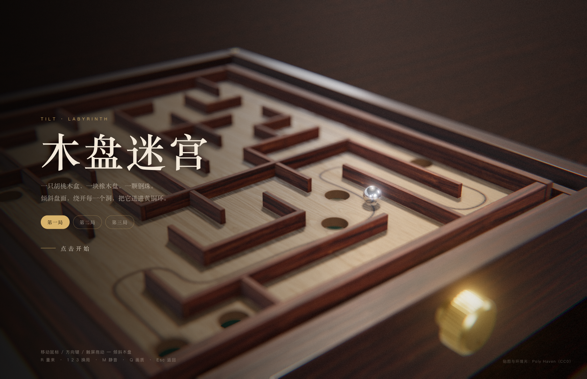

木盘迷宫
一只胡桃木盒，一块橡木盘，一颗钢珠。轻轻倾斜盘面，绕开陷阱洞，把钢珠送进黄铜环。共三关，直接在浏览器里玩。
开始游戏 →
怎么玩
电脑上点击画面开始，移动鼠标控制倾斜方向，也可以用方向键或 WASD。触屏设备上拖动盘面操作。钢珠掉进陷阱会回到起点；送进黄铜环后，可以查看用时、掉落次数和本机最佳成绩，再进入下一关。
| 操作 | 作用 |
|---|---|
| 鼠标 / 方向键 / WASD / 触屏拖动 | 倾斜木盘 |
| R | 重新开始这一关 |
| 1 / 2 / 3 | 切换关卡 |
| Q | 切换标准 / 高画质 |
| M | 静音 |
| Esc | 返回游戏标题 |
游戏包含约 11 MB 的脚本、贴图与环境光，首次打开需要稍等。电脑键盘操作更方便；触屏手感和流畅度取决于设备。
木纹、钢珠和光
木纹与影棚环境光采用 Poly Haven 的 CC0 素材。钢珠会映出身边的木条和洞口，盘面倾斜时，光影也会跟着变化。声音由浏览器实时合成。